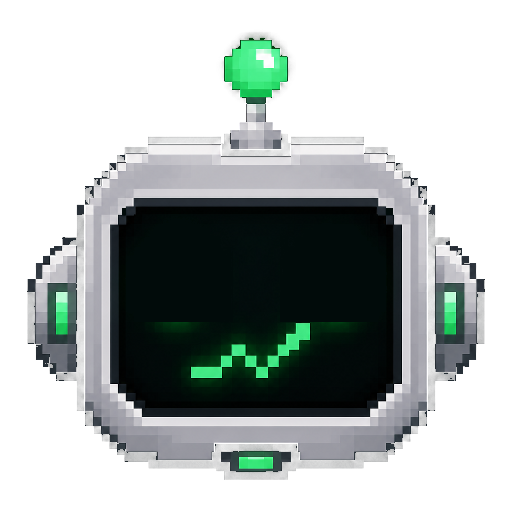

Every launch, on the record.
Every token launched with a tag on X, tracked here in real time — open any token to see what your position would be worth today if you'd never sold.
How launching works
No dashboard, no wallet setup, no forms. If you can post on X, you can launch a token on Robinhood Chain.
Tag Ponsr
Post on X mentioning Ponsr with a name and symbol — in any phrasing, casual or formal. The parser handles the rest.
It launches
Your wallet is resolved automatically and the token deploys through the pons factory. The treasury fronts the fee — you pay nothing.
Track forever
Every launch lands on the live ledger. Come back anytime to see what your position would be worth had you simply held.
The one that held.
Before you launch.
Ponsr is neutral infrastructure — a tool, not an advisor. Here's the plain version.
What is Ponsr?
What does it cost me?
Do you hold my keys?
Are these tokens an investment?
Where does the "what if" number come from?
Every launch, browsable.
Search, sort and filter every token ever launched through Ponsr — market cap, holders, curve progress and age, updating live.
Every launch, on the record.
—
Connect the wallet you traded with and this shows what your position would be worth today — a record of what happened, not a prediction.